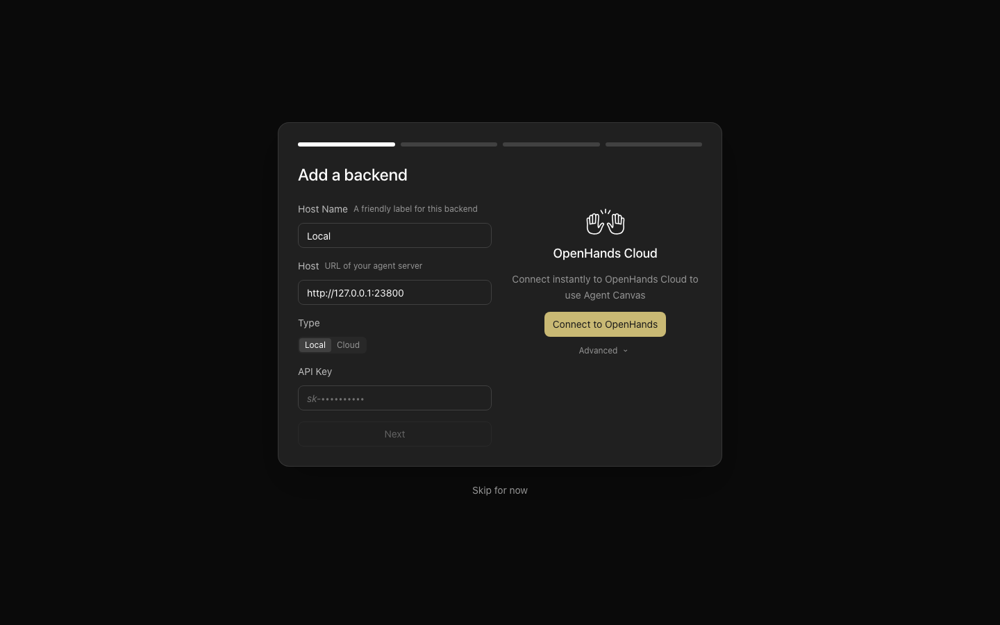
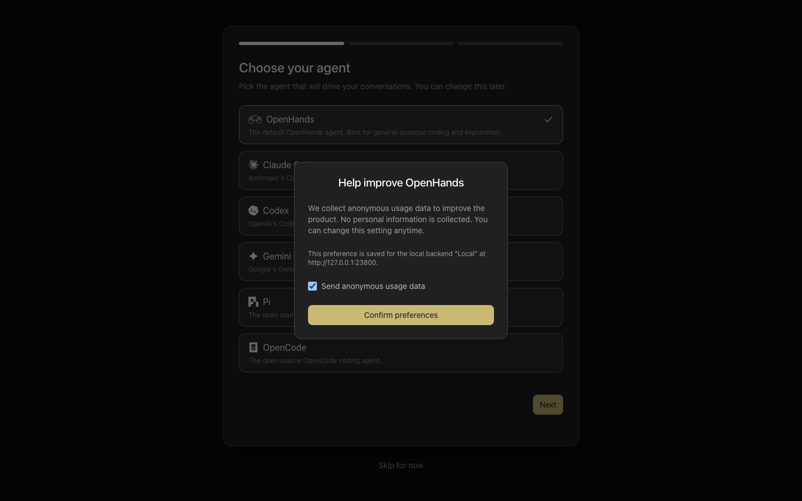
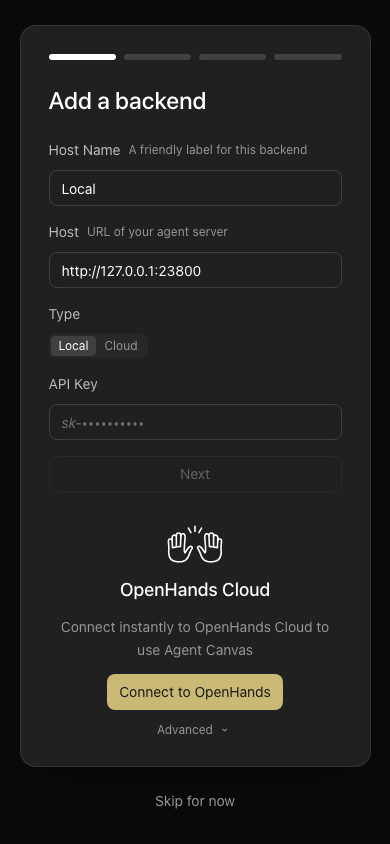
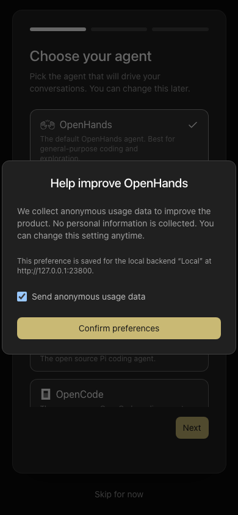

OpenHands/OpenHands · proposal #17949 · 13 October 2026
The launcher honors the explicit LAN option and describes the services it starts.
The existing --allow-lan-session-key option now reaches both the ingress policy and its frontend process. Expected occupied-port errors print once, and backend-only runtime descriptions stop advertising a frontend.
Before and after
The opt-in changes LAN key injection; public mode remains key-free.
Code and ownership
| Area | Behavioral change | Source |
|---|---|---|
| CLI and static launchers | Parse and forward the existing option to the frontend policy and static child process. | dev-with-automation · line 1238 · dev-static · line 448 |
| Port check / entry points | Tag expected port conflicts EADDRINUSE; print one diagnostic with --port/PORT guidance. Unexpected failures retain their stack. | assertPortsFree · line 277 · npm entry point · line 174 |
| Runtime service descriptions | Include the frontend clause only when that service is advertised. | runtime-services-info · line 100 |
| Verification support | Drive actual launch variants, probe a run-owned occupied port, preserve observed viewport metadata and matched historical receipts. | CLI · proof logic |
| Regression contract | Specs LAR-001 through LAR-003 and focused tests document the intended option, failure and metadata behavior. | Specs |
Live comparison
The real npm launcher ran the same tracked recipe on Agent Server/SDK 1.54.0 and automation 1.19.3. All four blocks have two baseline reproductions and two passing fix attempts: complete verification and receipts.


Phone comparison · 390×844


Compatibility and limits
No endpoint or request schema changes. Loopback injection, key-free public mode and non-loopback suppression without an opt-in retain their existing tests. An occupied required port still exits 1; only the expected diagnostic format changes. The backend-only root still returns 503 because it has no frontend.
Verification covers these three reported launcher behaviors. Docker and Electron paths were not exercised. Keys are disposable and absent from the published media. The complete private run ledger remains local; selected assertion receipts redact checkout and run paths.